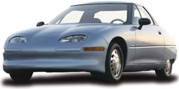
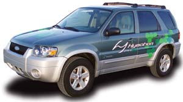
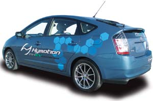
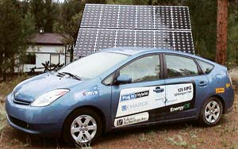
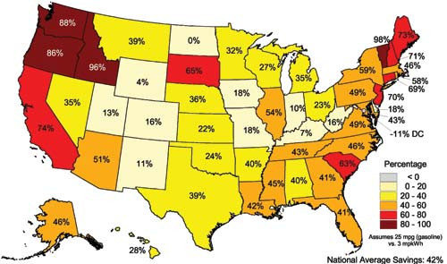
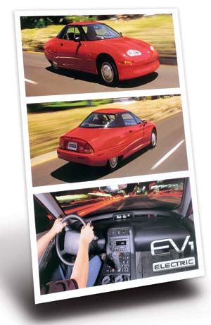
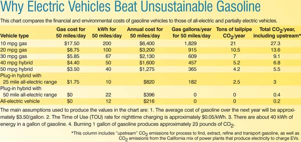

We already have the technology we need to cure our addiction to oil, stabilize the climate and maintain our standard of living, all at the same time. By transitioning to sustainable technologies, such as solar and wind power, we can achieve energy independence and stabilize human-induced climate change.
Increasing transportation efficiency is the best place to start efforts to reduce emissions of carbon dioxide (CO2), which is a primary culprit in global warming. Of all CO2 emissions in the United States, about 33 percent comes from transportation.
The chart in the Image Gallery shows the overwhelming advantages of plug-in hybrid vehicles and all-electric vehicles (EVs) over gasoline vehicles. With gasoline-electric hybrid power and all-electric power, we can achieve significant cost and environmental savings. By adding more batteries and recharging capability to gasoline-electric hybrid vehicles, we can have plug-in hybrids that offer the range of hybrids (500 miles or more), plus the benefit of all-electric power for short trips, which dramatically reduces the amount of gasoline used. EVs require no gasoline whatsoever and, when recharged from renewable energy sources, produce zero total emissions.
In fact, even if we switched from gasoline cars to EVs and plug-in hybrids recharged by our existing utility grids (which mostly use fossil fuels), we would see a 42 percent national average reduction in CO2emissions, according to research by Peter Lilienthal of the National Renewable Energy Laboratory (for more details, see the map in the Image Gallery).
As we approach the peak of world oil extraction and witness the consequences of climate change, it is important to reflect on how the world’s most technologically advanced nation came to base its economy on the use of polluting, finite resources. It is also important to recognize that corporations exist, for the most part, for one reason: to make money. This gives us, the consumer, the ultimate power to shape corporate behavior through how we spend our money.
Transportation efficiency is usually measured without regard for how fuel ends up in the tank, we just assume it will be there. It’s time to develop a better method, one that considers the finite nature of fossil fuels and how their use affects the planet’s ability to support life. Ultimately, almost all energy on Earth comes from the sun, so fuel efficiencies should be measured from sun to wheel.
Fossil fuels are inherently very inefficient because of the hundreds of millions of years of solar energy and the rare geologic events it takes to produce them. About 350,000,000 terawatt (trillion watt) hours of solar energy strike the Earth every year. It took 3.5 billion years of photosynthesis to create world oil reserves that contain about 1,000,000 terawatt hours of energy. Do the math and you will find that using direct solar radiation is about a quadrillion times more efficient than burning fossil fuels. It is long past time to transition from ancient solar energy, aka fossil fuels, to using the solar energy we receive every day.
Biofuels, such as ethanol and biodiesel, may help us transition to cleaner vehicles, but let’s not forget that overharvesting has contributed to the decline of many civilizations over the last 10,000 years. For the last 100 years, ever-increasing amounts of soil nutrients and fossil fuels have been consumed to grow and distribute food. As the needs of an increasing population collide with the realities of diminishing soil quality and fossil fuels, growing food will trump growing fuel.
Photosynthesis by plants is a maximum of 1 percent efficient at converting solar energy into carbohydrates. The efficiency of producing biofuels from carbohydrates and then getting refined fuel to vehicles varies from 10 percent to 35 percent, depending on the process and the distance to the use. Then there’s the 10 percent to 20 percent efficiency of the internal-combustion engine and the transmission. So, the sun to wheel efficiency of biofuels is 0.01 percent to 0.07 percent.
Producing electricity from solar energy using photovoltaics (PV) is about 5 percent to 20 percent efficient, and solar-thermal electric generation can be more than 35 percent efficient. Current battery charge/discharge efficiency varies from 80 percent to 95 percent. Electric motors are more than 90 percent efficient. As a result, the sun to wheel efficiency of solar-electric power falls between 3 percent and 30 percent. This gives solar-electric vehicles an advantage 50 to 3,000 times greater than burning biofuels.
Of course, for EVs to truly have zero emissions, the electricity used to charge their batteries must be generated from renewable sources such as the sun or wind. If EVs are charged with electricity generated by nuclear or coal-fired power plants, the true costs will be passed on to future generations. Fortunately, renewables are ready and able to charge EVs and plug-in hybrids.
Inventors first started tinkering with small EVs right after the invention of the electric motor in 1833. But it wasn’t until 1859 that the first rechargeable lead-acid battery made it possible for electric vehicles to be more than a novelty. In 1890, the first golden age of EVs started in Des Moines, Iowa, with William Morrison’s electric car. For the next two decades manufacturers such as General Motors (GM), General Electric, Studebaker, Baker and others raced to create a successor to the horse as the preferred mode of transportation.
At the turn of the century, quiet, clean electric cars out-sold loud, smoke-belching gas cars and were assumed by most to be the way of the future. In 1900, Thomas Edison started work on a new alkaline battery, and by 1909 he was manufacturing nickel iron cells that had almost double the power-to-weight ratio of the lead-acid batteries of the day. Meanwhile, a prerequisite for driving Ford’s gas-powered Model T was the strength to turn the crank to start the engine. It took the invention of the electric starter in 1912 to convince “respectable people” that the elegant silence of EVs was worth giving up for the longer range of gas cars.
Electric street cars and light rail continued to develop as a clean and efficient way to get around until the Great Depression. In the 1920s the oil, auto and tire industries became the most powerful business interests on Earth. In the late ’20s GM, Standard Oil and Firestone lobbied federal and local governments to eliminate public funding for electric rail projects, and supported funding of road building projects. By 1940, this gasoline alliance had succeeded in shifting the emphasis to private transportation. Never mind that rail can be hundreds of times more efficient than idle traffic on the freeway. From a pure profit point of view, this was an effective way of eliminating competition. From a social point of view, it was a sea change that triggered suburban sprawl and a lifestyle that led to our oil addiction.
When the oil embargo hit in 1973, the writing was on the wall. It seemed a national effort to improve battery technology and switch to renewable energy would be the rational next step. After all, domestic oil production had peaked in 1970. Worse yet, a foreign cartel controlled 80 percent of world oil reserves and was becoming a force to be reckoned with. About a dozen new EV manufacturers in the United States and Europe went into limited production, mostly for commercial delivery use.
In 1978, the federal gas guzzler tax levied a fee on cars with poor fuel economy and rising gas prices made more efficient foreign cars increasingly popular. For the first time, oil use and oil imports started decreasing in 1979 and through the early ’80s.
Just as it seemed a smooth transition away from oil might be possible, President Reagan took the solar panels off the White House. Instead of staying on course toward a sustainable future, the nation that once prided itself on its independence had slid deeper and deeper into debt to pay for its dependence on foreign oil.
But there were a few bright spots for clean transportation in the ’80s: Stanford Ovshinsky, Paul MacCready and Andrew Frank. Ovshinsky invented the nickel metal hydride battery, which is used in almost all of today’s hybrids and EVs. MacCready initiated a wave of change with a variety of transportation innovations, including the pedal-powered Gossamer Albatross and the solar-powered Solar Challenger. Both flew across the English Channel and captured the imaginations of a new generation of engineers. Professor Frank started working with his students at the University of California at Davis to build what we now call plug-in hybrids. Ovshinsky was named a Hero for the Planet by Time and MacCready was named Engineer of the Century by the American Society of Mechanical Engineers. Frank’s inventions have not yet received the accolades they deserve, but I think he’ll be one of this century’s heroes because his work will lead to widespread plug-in hybrids.
In 1988, Alec Brooks, an engineer with AeroVironment, Paul MacCready’s research and development firm, sold the idea of developing a prototype EV to middle management at GM. Bob Stempel - who would later take over as GM’s CEO and is now the CEO of ECD Ovonics, the company co-founded by Stan Ovshinsky - was the project’s primary advocate. Brooks headed the prototype team, and Alan Cocconi, another talented engineer at AeroVironment, worked alone on the electronics. The inverters he built would take the car (which would eventually be named the EV1) from zero to 60 mph in eight seconds, provide regenerative braking and act as a battery charger. The Delco Remy division of GM worked on an 850 pound lead-acid battery pack that would give the car a range of 124 miles at 55 mph. The prototype was completed in January of 1990 and got rave reviews at auto shows. It was easily the most efficient car ever built with funding from an American automaker.
After seeing the new possibilities for all-electric cars, the California Air Resource Board announced the Zero Emission Vehicle (ZEV) mandate in 1990. The mandate was an attempt to restore clean air to the smog-choked state and required that by 1998 at least 2 percent of new cars sold in the state emit zero emissions. The standard would rise to 5 percent by 2001 and 10 percent by 2003. The ZEV mandate spurred technology development around the world and started an epic battle between California and the auto industry.
Hope for auto industry leadership to solve air pollution problems dimmed when Bob Stempel’s term at GM was cut short, in part because of his support for EVs. The auto industry instead started promoting “passenger trucks” (trucks, vans and SUVs) for several reasons: 1. Trucks were not included in the ZEV mandate. 2. The 1978 gas guzzler tax did not apply to trucks. 3. Trucks did not have to meet the same safety, fuel economy or emission standards as cars, with the heaviest trucks exempt from all standards. 4. Such heavy trucks (Ford Excursion, GM Hummer, etc.) qualified for federal tax credits that essentially made them free to small business owners and those with a large income tax liability.
In 1990, only 4 percent of vehicles sold in the United States were passenger trucks. By 2003, 50 percent of vehicles sold were trucks. For the same period, vehicle fuel economy declined from nearly 30 miles per gallon to about 20 mpg.
Automakers generally need at least three years to bring a new model from concept to production. If they were to be ready with ZEVs to meet the 2 percent mark for the 1998 model year, they would have to start designing them by 1995.
In the spring of ’95 the Western States Petroleum Association and the California Manufacturers and Technology Association started a campaign against EVs. In early spring, articles started appearing in newspapers, magazines and even scientific journals. They quoted what seemed to be reputable studies and argued that the ZEV mandate would ruin California’s economy, raise the cost of every car sold in America by $5,000 and that the batteries would cause pollution and endanger drivers. In truth, the studies the articles referred to were unreliable.
Then the campaign went into high gear. Political campaign-style ads started appearing on TV. The ads appeared to be produced by concerned citizen groups and suggested that government regulation was going to cost the California taxpayer $28 billion and force everyone into cars that would leave people stranded on the road when their batteries died.
The more than $30 million spent in the campaign amounted to only a few minutes of the auto and oil industries’ annual revenue, but it had a significant effect: Hundreds of companies that were gearing up to produce EV components went out of business. In 1996, the Board eliminated the 2 percent requirement for 1998 and the 5 percent requirement for 2001, but tried to save face by leaving the 10 percent requirement in place for 2003.
Most of the automakers had continued developing EVs in case they could not stop the mandate. In late ’96, GM started to lease the EV1. Toyota started leasing its RAV4 EV in ’97. Honda, Ford, Nissan and Chrysler also offered a limited number of EVs in the following years. But every automaker maintained control of its EVs, primarily by only offering the cars for lease. The lone exception was that Toyota sold about 150 RAV4 EVs in late 2002; I bought one and it now has 56,000 miles and still runs 80 to 100 miles on a charge.
In 2000, the automakers were just three years away from the 10 percent stage of the ZEV mandate. Ford said it could try to meet a revised 2003 requirement. GM, on the other hand, made a series of moves that would culminate in the recall and crushing of the EV1 and the end of GM’s electric vehicle program.
In January 2001, the Board reduced the 2003 requirement to 2 percent. Soon thereafter, GM filed a lawsuit against the state of California. The suit alleged that the Board could find more cost-effective ways to reduce air pollution than by imposing the production of EVs on the auto industry. In June 2002, the federal government joined GM’s lawsuit. A federal judge then issued an injunction preventing the Board from enforcing the 2001 requirement. Then, in April 2003, the automakers and the federal government won, while the public lost: The Board abandoned the mandate.
Last year, in response to increasing concerns about the effects of global warming, California passed limits on cars’ CO2 emissions. Again, all the major automakers filed suit against the state of California. Seven northeastern states also have adopted California’s standards. Such moves are part of a growing grass-roots effort by local governments to deal with issues such as climate change and our reliance on oil. (To learn more, visit the Union of Concerned Scientists.)
Although the EV1 and other electric cars never reached mass production, gasoline-electric hybrids, such as the Toyota Prius and Honda Civic Hybrid, have seen runaway success in recent years. Now, the next step is for plug-in hybrids to graduate from the classrooms of Andy Frank and the garages of plug-in conversion companies such as EnergyCS, Hymotion and Hybrids Plus. Interest in plug-in hybrids is booming as drivers are increasingly frustrated with skyrocketing gas prices and cars’ poor fuel economy. Automakers, which previously dismissed the idea of plug-in hybrids, are now openly expressing interest. “We are pursuing a plug-in hybrid vehicle, which will conserve more oil and slice smog and greenhouse gases to nearly imperceptible levels,” said Jim Press, Toyota’s top U.S. executive, in a recent speech. Ford and GM have also expressed interest in plug-in hybrids.
This time around, let’s hope that enough people will demand that automakers offer better transportation choices. Please join the Plug-in Partners National Campaign; together we can transform our transportation system.
In 1993, Mother Earth News contributing editor Steve Heckeroth converted a Karmann Ghia, Fiero and Vanagon with a PV pop-top to run on batteries. Since then, he’s converted more than 12 cars to all-electric power. Today he drives a Toyota RAV4 EV and charges it with solar panels.
|
 SONY PICTURES CLASSICS The electric car that almost changed the world, GM’s EV1. |
 HYMOTION A Ford Escape Hybrid converted to a plug-in hybrid. |
 HYMOTION A Toyota Prius Hybrid converted to a plug-in hybrid. |
|
 PETE NORTMAN/ENERGYCS On short trips, plug-in hybrid cars operate almost solely on electricity. And their batteries can be recharged with clean, renewable solar energy. |
 PETER LILIENTHAL/NREL POTENTIAL C02 REDUCTIONS FROM ELECTRIC AND PLUG-IN ELECTRIC VEHICLES. Even if we switch from gasoline-powered cars to electric cars charged by existing utility grids (which mostly use fossil fuels), there would be significant reductions in carbon dioxide emissions, the primary greenhouse gas that leads to global warming. The map above shows the potential reductions for each state; the national average reduction would be 42 percent. |
 SONY PICTURES CLASSICS In the late 1990s, the all-electric EV1 was the most efficient car ever from an American automaker. It was fun, fast and required no gas. But GM eventually discontinued the model and crushed its fleet of EV1s. |
|
 STEVE HECKEROTH This chart compares the financial and environmental costs of gasoline vehicles to those of all-electric and partially electric vehicles. |
|
|